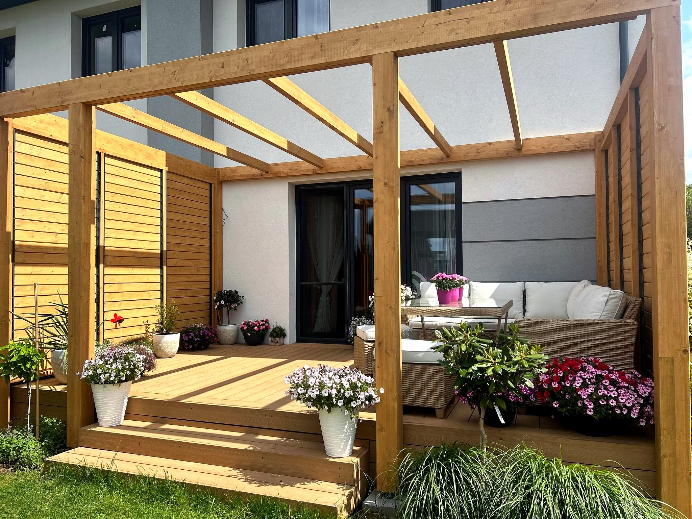
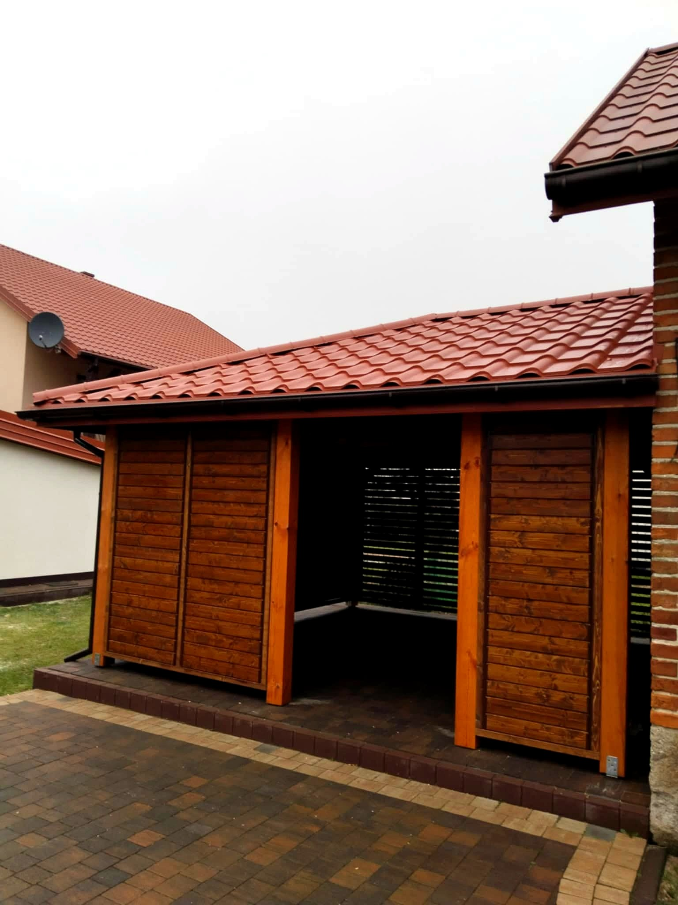
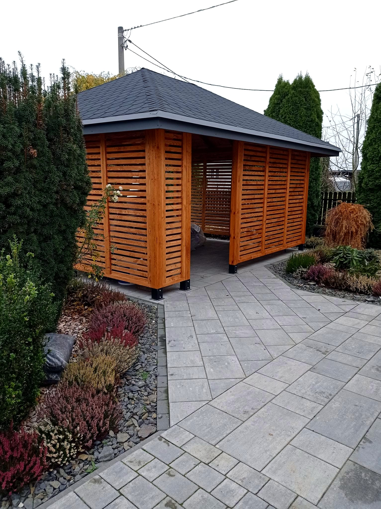
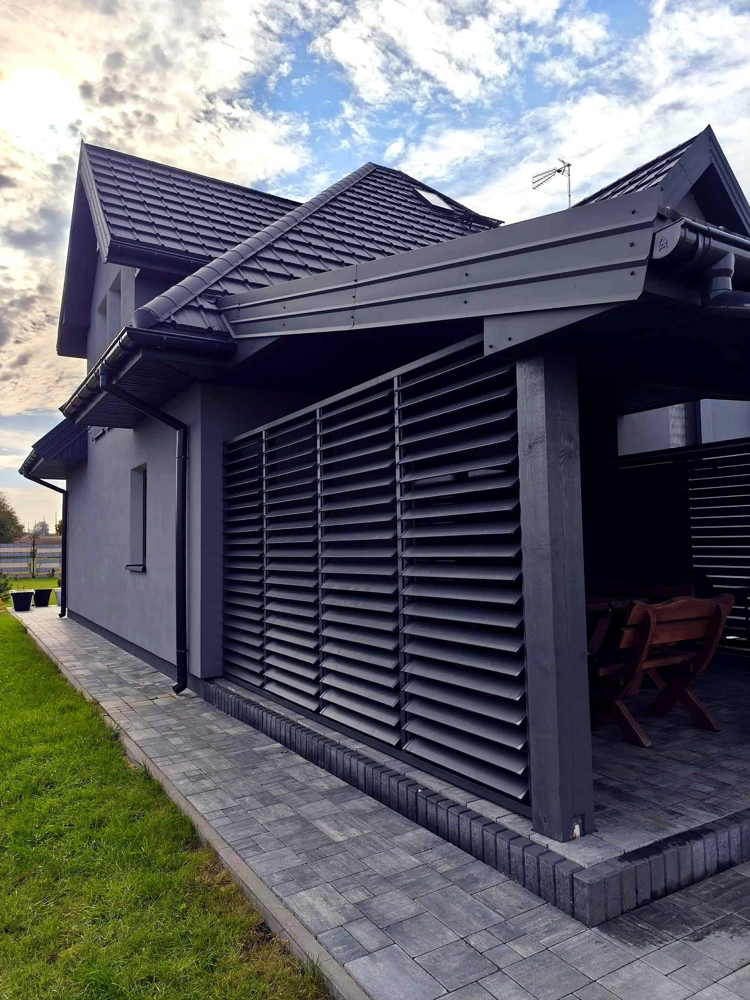
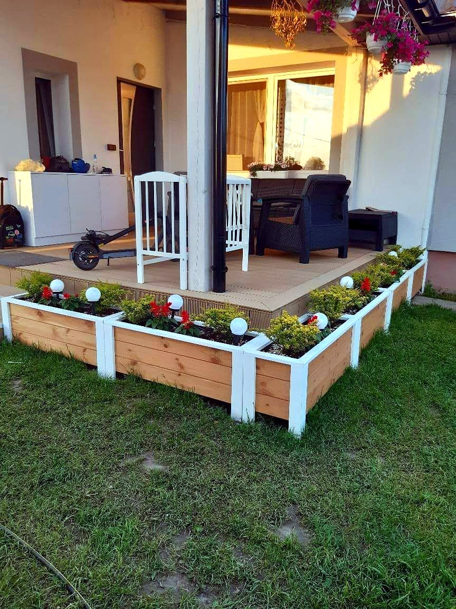

Drewniana stolarka zewnętrzna i ogrodowa — od dużych konstrukcji po detale, które robią klimat w ogrodzie.

Solidna konstrukcja z drewna, wykończona okładziną z desek lub żaluzji. Zadaszenie, które chroni samochód czy wejście, a przy okazji podnosi wygląd całej posesji.

Altany, pergole i wiaty biesiadne projektujemy pod wielkość działki i styl domu — żeby było gdzie usiąść z rodziną, w cieniu i o każdej porze sezonu.
Taras z porządnych desek oraz eleganckie zadaszenie, które łączy drewno ze szkłem lub poliwęglanem — cień latem i ochrona przed deszczem przez cały rok.

Nasz znak rozpoznawczy. Ruchome listwy, które ustawisz jak chcesz — przymkniesz na pełną prywatność albo uchylisz, żeby wpuścić światło i powietrze.

Drewniane detale, które kończą całość — donice, ławki, stoły i huśtawki w jednym stylu z resztą zabudowy ogrodowej.

Schludne obudowy i osłony, które chowają to, co brzydkie, i spinają otoczenie domu pod jeden, spójny styl.
Zadzwoń i opowiedz, co planujesz — przygotujemy indywidualną wycenę i termin.